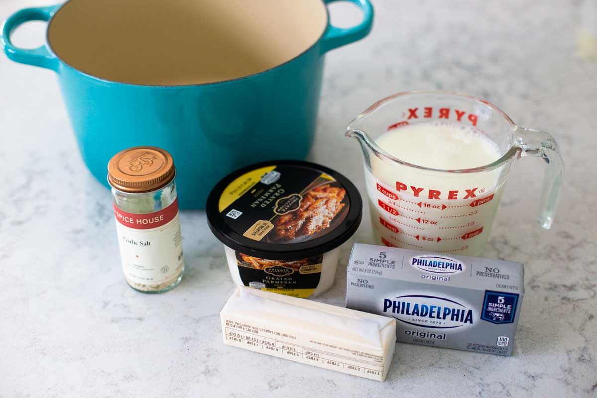

Parmesan Cheese Spaghetti

A picture of Homemade Parmesan Cheese Spaghetti
Ingredients
- Cream cheese
- Herbs: Parsley
- Cream: Half and half, heavy cream, light cream or thickened cream
- 2 tsp olive oil or Butter
- Salt to taste
- 2 beef bouillon cubes, crumbled
- Grated parmesan
- Garlic salt
- Any style of Pasta

Cooking Instructions
- Set a large sauce pot over medium-high heat and add the butter to the pot to begin to melt.
- Meanwhile, prep the milk and cream cheese.
- Pour and measure the milk and set it by the stove, too.. Reduce heat to low-medium heat, season with salt, pepper and crumbled bouillon cubes.
- Once the butter has completely melted, add the squares of cream cheese to the pot and gently stir with a whisk.
- Sprinkle in the garlic salt and pour in the milk. Whisk until smooth. Continue to cook until the sauce begins to thicken slightly, about 5 - 7 minutes.
- Finally, add the grated parmesan and whisk until smooth. This will help to thicken the sauce quite a bit
- Add your pasta and allow cook for 5mins
- Serve with a bottle of cold white wine.
Return to top of page
Return to main page